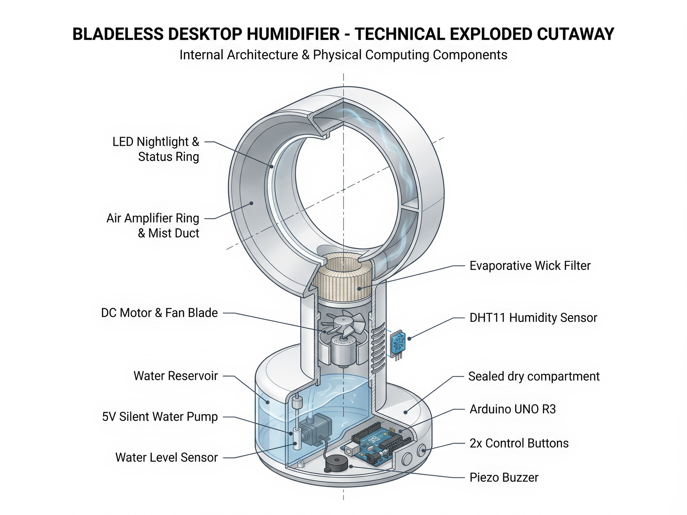

AeroDew is a sleek, 3D-printed desktop evaporative humidifier that helps indoor residents combat dry winter air without the white dust, high cost, or bulky cylinder design of traditional humidifiers. It responds to ambient humidity, water levels, and button presses by dynamically adjusting its internal fan and 5V water pump, illuminating status/nightlight LEDs, and sounding a buzzer alert when it senses low water.
Why I'm building this: Running heaters in the winter makes indoor air uncomfortably dry. Ultrasonic humidifiers require strict water quality and frequent cleaning, commercial evaporative humidifiers are expensive and visually bulky, and Dyson's bladeless design is costly and inconvenient to refill. By combining 3D-printed CAD modeling with Arduino physical computing, AeroDew aims to deliver an affordable, easy-to-refill, and aesthetically pleasing desktop solution.

Figure 1: Technical cutaway illustration of AeroDew based on my Onshape 3D model. The design separates wet and dry zones: the rear base houses the water reservoir, 5V silent pump, and water level sensor, while the sealed front compartment holds the Arduino UNO R3, piezo buzzer, and control buttons. The DC fan sits in the central column beneath the evaporative wick filter, pushing humidified air up through the bladeless ring lined with status/nightlight LEDs.
| Category | Components |
|---|---|
| Microcontroller & Power | Arduino UNO R3, N-MOSFETs / transistors & flyback diodes (for motor & pump control), assorted resistors, external 5V/9V power supply |
| Inputs (Sensors) | DHT11 humidity sensor (mounted on exterior intake), Water level sensor, 2x Push buttons (target humidity / fan speed & night mode) |
| Outputs (Actuators) | DC motor + fan blade (from kit), 5V silent submersible water pump (ordered), LEDs (nightlight & status ring), Piezo buzzer (audio feedback) |
| Enclosure & Mechanics | 3D-printed bladeless-style housing (modeled in Onshape), evaporative wick filter, water reservoir |
I used Gemini to help refine the English phrasing of my proposal to fit the required template structure, organize the Bill of Materials and timeline, generate the technical cutaway illustration (Figure 1) based on my original Onshape 3D model screenshot, and format this HTML documentation page. All product concepts, 3D CAD modeling, component selections, and contingency plans are my own.